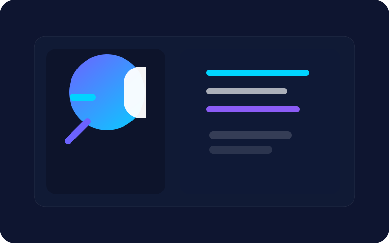
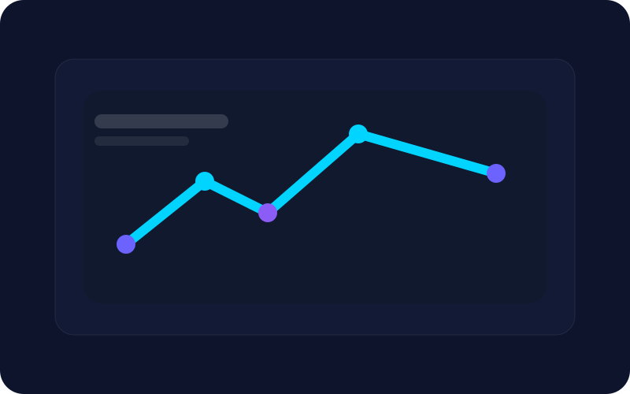
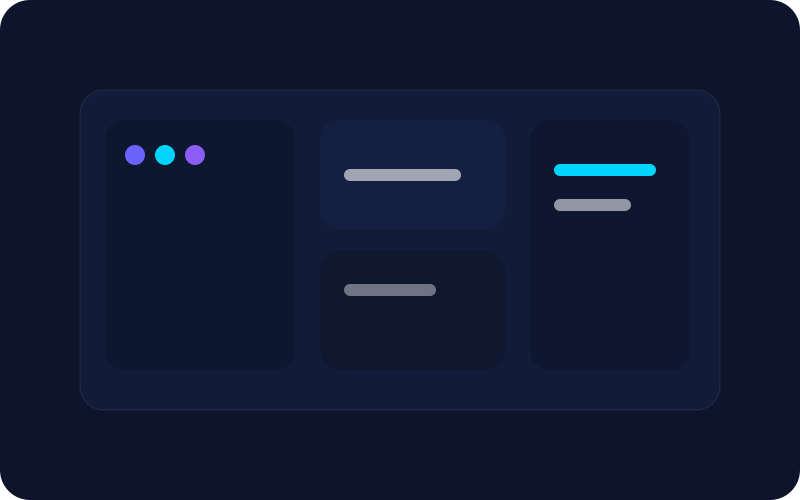
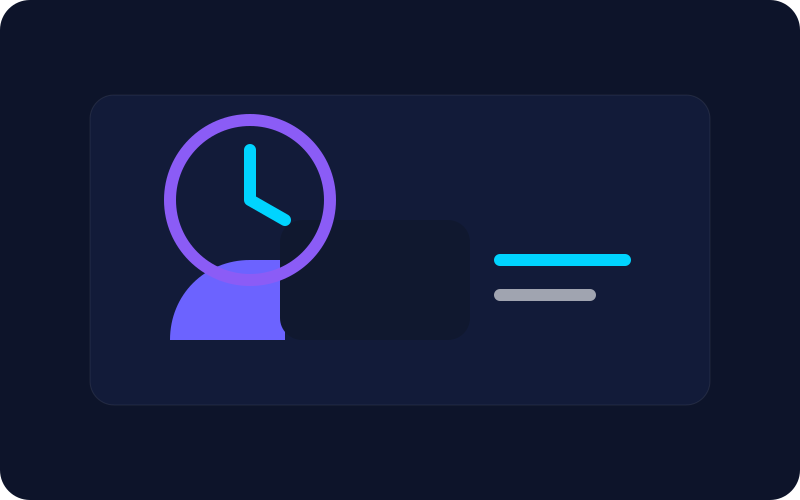

Project Hub
Systems, experiments, and product stories in motion.
Every build reflects a practical approach to AI, modern software, and thoughtful user experience.
Project Hub
Every build reflects a practical approach to AI, modern software, and thoughtful user experience.



